One of the very first models of a dynamic system was developed independently by the mathematicians Lokta and Volterra and is now known as the Lotka-Volterra model. This model simulates interacting populations of predators and prey, which had been seen to display fluctuations that either could not be explained by exogenous shocks, or which displayed counterintuitive responses to exogenous shocks--such as the observed increase in the proportion of predators (sharks, rays, etc.) in the fishing catch in the Adriatic Sea during WWI, when biologists had expected the proportion of predators to fall.
The basic dynamics of the predator-prey model are that the number of prey is assumed to grow exponentially in the absence of predators, while the number of predators is assumed to fall exponentially in the absence of prey. Using Rabbits as our example of prey and Foxes as our example of predators, the initial dynamic equations are :

When interaction between predators and prey is considered, the simplest
assumption is that predators reduce the growth rate of prey ( ) by
some constant 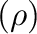 times how many predators there
are, while prey reduce the death rate of predators (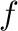) by another
constant 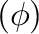 times how many prey there are:
) by
some constant 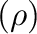 times how many predators there
are, while prey reduce the death rate of predators (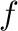) by another
constant 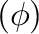 times how many prey there are:
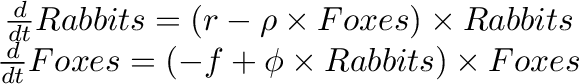
The non-zero equilibrium of this system is easily calculated by setting the differential equations to zero:
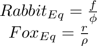
Mathematicians initially expected that this model would converge to this equilibrium over time, but this was not the case: quotePeriodic phenomena play an important role in nature, both organic and inorganic ...it appeared, from the nature of the solution obtained, improbable that undamped, permanent oscillations would arise ... It was, therefore, with considerable surprise that the writer, on applying his method to certain special cases, found these to lead to undamped, and hence indefinitely continued, oscillations.
The mathematical reason for this phenomenon is fairly easily derived by mathematical stability analysis. For a system as simple as this, the main advantage of a system dynamics program is that it enables the numerical simulation of this model. To do this, this system of ordinary differential equations needs to be converted into integral equations, since numerical integration is a more accurate process than numerical differentiation. In mathematical form, these integral equations are: 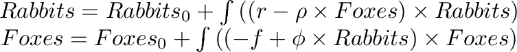
Here 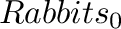and 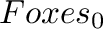 represent the initial number of Rabbits and Foxes.
The next figure shows this model in Minsky, with the initial conditions set up so that they differ slightly from the equilibrium. To see how to build a model like this step by step, see Minsky model building:
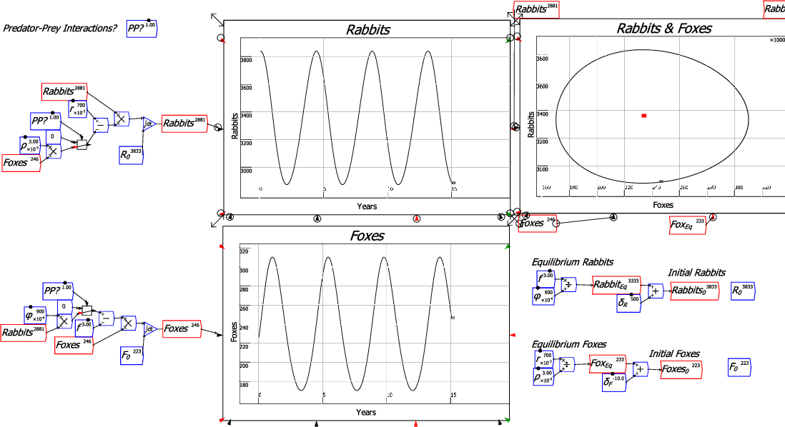
Programs like Vensim and Simulink have been in existence for decades, and they are now mature products that provide everything their user-base of management consultants and engineers want for modeling and analyzing complex dynamic systems. So why has Minsky been developed? The key reason is its unique feature of Godley Tables, which allow dynamic equations to be developed for monetary transactions via double-entry bookkeeping tables.